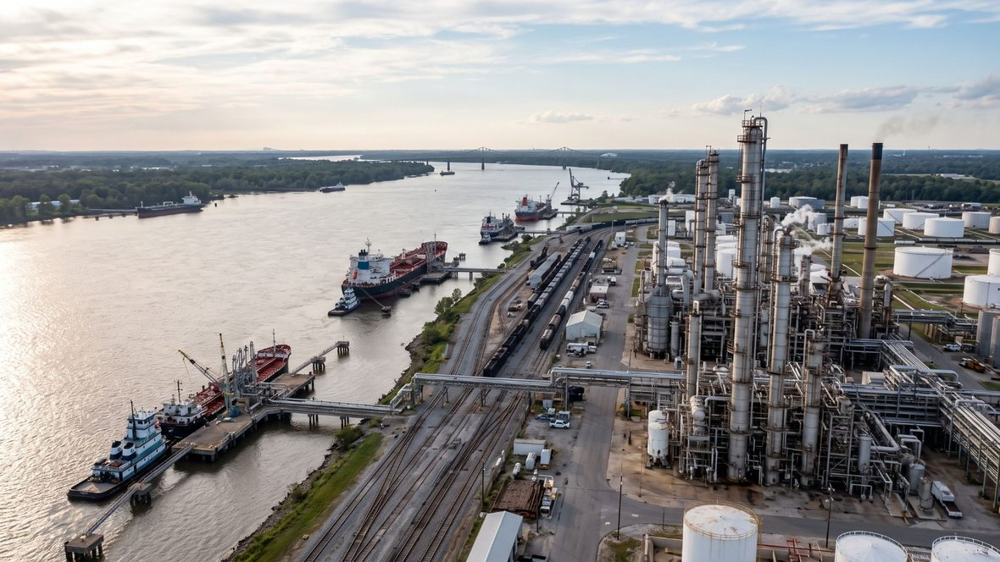

LOUISIANA EXPANSION
Louisiana Economic Development & Business Expansion Consulting
Helping companies navigate incentives, government, investment, workforce, and growth opportunities in Louisiana.
EXPANDING OR INVESTING IN LOUISIANA
A Louisiana expansion is rarely a single decision
Expanding a company or developing a major project involves more than choosing a location and making an investment. Companies must understand incentives, workforce resources, government processes, infrastructure, funding opportunities, regulatory requirements, local stakeholders, and the organizations involved in economic development.
Callegari Solutions helps companies navigate that environment. The firm provides Louisiana economic development consulting for businesses expanding, investing, or building a project in the state.
We work with businesses considering Louisiana, companies already operating in Louisiana, and organizations developing new projects or expanding existing operations. We help identify opportunities, solve problems, connect resources, coordinate stakeholders, and develop a practical path from concept to execution.

INCENTIVES AND WORKFORCE
Louisiana economic development & incentive strategy
Callegari Solutions helps businesses identify economic development programs and incentives that may support job creation, capital investment, facility development, workforce growth, technology investment, and business expansion.
- Identify potentially applicable Louisiana Economic Development programs
- Review potential state and local business incentives
- Identify tax credit and tax incentive opportunities
- Research workforce and training resources
- Identify grants and funding programs
- Evaluate local, state, and federal resources
- Assist with incentive strategy and project positioning
- Help organize information required for applications
- Coordinate with economic development organizations and government entities
- Help clients understand program requirements, timing, and continuing obligations
HOW WE DESCRIBE THIS WORK
Callegari Solutions is an independent consulting firm. It is not Louisiana Economic Development, and it is not affiliated with or endorsed by that agency or by any other state or local entity. Not every project qualifies for an incentive, and no consultant can promise that one will.
What the firm does is identify the Louisiana business incentives and programs that may apply to a project, evaluate them against what the project actually involves, navigate the processes and requirements around them, assist with the information a program asks for, and coordinate the people and organizations who need to be part of the conversation.
BUSINESS EXPANSION AND CAPITAL INVESTMENT
Business expansion & capital investment
Louisiana business expansion takes many forms. A manufacturing expansion, a new industrial facility, a first operation in the state, and a capital investment in an existing plant each raise different questions. Callegari Solutions can assist companies that are:
- Opening a Louisiana operation
- Expanding an existing facility
- Building a new facility
- Adding employees
- Making capital investments
- Relocating operations
- Evaluating Louisiana locations
- Developing manufacturing or industrial operations
- Implementing new technology
- Evaluating a major Louisiana project
SITE SELECTION IN LOUISIANA
Site & project strategy
A successful site involves more than acreage. Callegari Solutions can help clients evaluate the broader project environment, including location considerations, local economic development resources, workforce, transportation, utilities, government jurisdictions, permitting pathways, incentives, community stakeholders, and public-sector partners.
When specialized legal, engineering, environmental, accounting, real-estate, or technical expertise is required, Callegari Solutions can help clients identify and coordinate the appropriate professionals as part of the broader project strategy.
AGENCIES, PROGRAMS AND STAKEHOLDERS
Government navigation
Companies often know what they want to accomplish but do not know which agency, program, office, organization, or individual can help them accomplish it. Callegari Solutions helps identify who needs to be involved, what questions need to be asked, what resources may be available, and what steps can help move the project forward.
LOUISIANA EXPANSION SCENARIOS
Is this you?
These are the situations companies describe when they call. If one of them sounds like your project, there is enough to talk about.
-
You are opening a Louisiana operation and need to understand the programs, agencies, and local resources involved before commitments are made.
-
You are expanding an existing Louisiana facility and want to know which incentives and workforce programs may apply to the expansion.
-
You are building a new facility and need permitting pathways, utilities, jurisdictions, and public stakeholders identified early rather than late.
-
You are adding employees and making a capital investment, and you want workforce and investment programs evaluated against the real project numbers.
-
You are evaluating Louisiana locations against sites in other states and need a clear picture of what each location would actually involve.
-
You are implementing new technology or developing advanced manufacturing operations and need the resources around the project coordinated.
HOW AN EXPANSION PROJECT MOVES
Four steps from question to project
-
Define the project
Establish what the company is actually planning: the operation, the investment, the jobs, the timing, and the decisions that are still open.
-
Map the environment
Identify the incentive programs, workforce resources, agencies, jurisdictions, and organizations that may apply to a project of that type and size.
-
Build the path
Evaluate the realistic options, organize the information each program asks for, and sequence the conversations, applications, and approvals in a workable order.
-
Coordinate and follow through
Stay involved to coordinate stakeholders, answer the questions that come up mid project, and keep the expansion moving toward execution.
Have a Louisiana project to move forward?
Tell us what you are trying to accomplish, where the project is stuck, or what opportunity you are evaluating. Callegari Solutions will help determine the path forward.